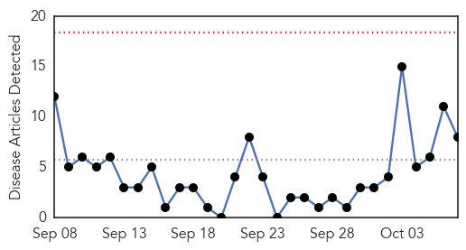
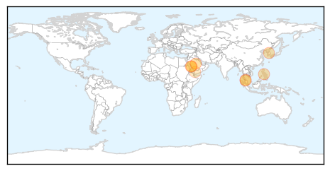
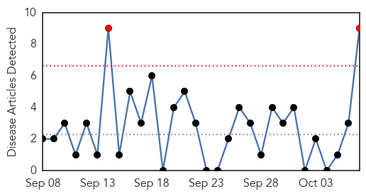

MERS
30-Day Web Trend
0 alerts, 0 warnings

30-Day Twitter Trend
1 alerts, 0 warnings

Article Locations

Article Confidences

Top Articles:
- 0.995
- Coronavirus Scan for Oct 07, 2015
- 0.995
- MERS virus in Slovakia
- 0.975
- Haj pilgrim in Yala 'may have Mers'
- 0.972
- Yala woman tested for MERS after Haj trip, news, Health News, AsiaOne YourHealth
- 0.962
- 3 infected by Saudi who died of MERS in Manila
- 0.917
- Haj pilgrim has suspected MERS symptoms
- 0.902
- Haj pilgrim may have MERS symptoms
- 0.709
- Health Ministry maintains close cooperation with WHO: Al-Obaidi
Top Tweets:
-
No tweets found for Oct 07, 2015
Swine Flu
30-Day Web Trend
2 alerts, 0 warnings

30-Day Twitter Trend
2 alerts, 0 warnings

Article Locations

Article Confidences

Top Articles:
- 0.999
- After dengue, swine flu likely to hit Delhi, govt preps up
- 0.993
- This week in wellness: Preventing the flu
- 0.989
- A nip in the air, so guard against swine flu
- 0.986
- 10 swine flu cases reported in Rajasthan
- 0.984
- Swine flu case found positive in City, Health Department on alert
- 0.982
- 10 swine flu cases reported in Rajasthan
- 0.963
- Have asked govt. hospitals to be prepared to fight swine flu, says Satyendra Jain
- 0.942
- Delhi Health Minister holds meeting to review Swine Flu preparedness
- 0.893
- Scientists call for urgent trials to judge flu drugs for pandemics
Top Tweets:
- 0.628
- Hey the study shows pretty good flu shot protection against H1N1 & flu B. Not perfect is better than nothing!